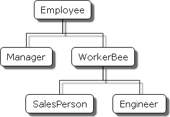

Using classes
JavaScript is a prototype-based language — an object's behaviors are specified by its own properties and its prototype's properties. However, with the addition of classes, the creation of hierarchies of objects and the inheritance of properties and their values are much more in line with other object-oriented languages such as Java. In this section, we will demonstrate how objects can be created from classes.
In many other languages, classes, or constructors, are clearly distinguished from objects, or instances. In JavaScript, classes are mainly an abstraction over the existing prototypical inheritance mechanism — all patterns are convertible to prototype-based inheritance. Classes themselves are normal JavaScript values as well, and have their own prototype chains. In fact, most plain JavaScript functions can be used as constructors — you use the new operator with a constructor function to create a new object.
We will be playing with the well-abstracted class model in this tutorial, and discuss what semantics classes offer. If you want to dive deep into the underlying prototype system, you can read the Inheritance and the prototype chain guide.
This chapter assumes that you are already somewhat familiar with JavaScript and that you have used ordinary objects.
Overview of classes
If you have some hands-on experience with JavaScript, or have followed along with the guide, you probably have already used classes, even if you haven't created one. For example, this may seem familiar to you:
const bigDay = new Date(2019, 6, 19);
console.log(bigDay.toLocaleDateString());
if (bigDay.getTime() < Date.now()) {
console.log("Once upon a time...");
}
On the first line, we created an instance of the class Date, and called it bigDay. On the second line, we called a method toLocaleDateString() on the bigDay instance, which returns a string. Then, we compared two numbers: one returned from the getTime() method, the other directly called from the Date class itself, as Date.now().
Date is a built-in class of JavaScript. From this example, we can get some basic ideas of what classes do:
- Classes create objects through the
newoperator. - Each object has some properties (data or method) added by the class.
- The class stores some properties (data or method) itself, which are usually used to interact with instances.
These correspond to the three key features of classes:
- Constructor;
- Instance methods and instance fields;
- Static methods and static fields.
Declaring a class
Classes are usually created with class declarations.
class MyClass {
// class body...
}
Within a class body, there are a range of features available.
class MyClass {
// Constructor
constructor() {
// Constructor body
}
// Instance field
myField = "foo";
// Instance method
myMethod() {
// myMethod body
}
// Static field
static myStaticField = "bar";
// Static method
static myStaticMethod() {
// myStaticMethod body
}
// Static block
static {
// Static initialization code
}
// Fields, methods, static fields, and static methods all have
// "private" forms
#myPrivateField = "bar";
}
If you came from a pre-ES6 world, you may be more familiar with using functions as constructors. The pattern above would roughly translate to the following with function constructors:
function MyClass() {
this.myField = "foo";
// Constructor body
}
MyClass.myStaticField = "bar";
MyClass.myStaticMethod = function () {
// myStaticMethod body
};
MyClass.prototype.myMethod = function () {
// myMethod body
};
(function () {
// Static initialization code
})();
Note: Private fields and methods are new features in classes with no trivial equivalent in function constructors.
Constructing a class
After a class has been declared, you can create instances of it using the new operator.
const myInstance = new MyClass();
console.log(myInstance.myField); // 'foo'
myInstance.myMethod();
Typical function constructors can both be constructed with new and called without new. However, attempting to "call" a class without new will result in an error.
const myInstance = MyClass(); // TypeError: Class constructor MyClass cannot be invoked without 'new'
Class declaration hoisting
Unlike function declarations, class declarations are not hoisted (or, in some interpretations, hoisted but with the temporal dead zone restriction), which means you cannot use a class before it is declared.
new MyClass(); // ReferenceError: Cannot access 'MyClass' before initialization
class MyClass {}
This behavior is similar to variables declared with let and const.
Class expressions
Similar to functions, class declarations also have their expression counterparts.
const MyClass = class {
// Class body...
};
Class expressions can have names as well. The expression's name is only visible to the class's body.
const MyClass = class MyClassLongerName {
// Class body. Here MyClass and MyClassLongerName point to the same class.
};
new MyClassLongerName(); // ReferenceError: MyClassLongerName is not defined
Constructor
Perhaps the most important job of a class is to act as a "factory" for objects. For example, when we use the Date constructor, we expect it to give a new object which represents the date data we passed in — which we can then manipulate with other methods the instance exposes. In classes, the instance creation is done by the constructor.
As an example, we would create a class called Color, which represents a specific color. Users create colors through passing in an RGB triplet.
class Color {
constructor(r, g, b) {
// Assign the RGB values as a property of `this`.
this.values = [r, g, b];
}
}
Open your browser's devtools, paste the above code into the console, and then create an instance:
const red = new Color(255, 0, 0);
console.log(red);
You should see some output like this:
Object { values: (3) […] }
values: Array(3) [ 255, 0, 0 ]
You have successfully created a Color instance, and the instance has a values property, which is an array of the RGB values you passed in. That is pretty much equivalent to the following:
function createColor(r, g, b) {
return {
values: [r, g, b],
};
}
The constructor's syntax is exactly the same as a normal function — which means you can use other syntaxes, like rest parameters:
class Color {
constructor(...values) {
this.values = values;
}
}
const red = new Color(255, 0, 0);
// Creates an instance with the same shape as above.
Each time you call new, a different instance is created.
const red = new Color(255, 0, 0);
const anotherRed = new Color(255, 0, 0);
console.log(red === anotherRed); // false
Within a class constructor, the value of this points to the newly created instance. You can assign properties to it, or read existing properties (especially methods — which we will cover next).
The this value will be automatically returned as the result of new. You are advised to not return any value from the constructor — because if you return a non-primitive value, it will become the value of the new expression, and the value of this is dropped. (You can read more about what new does in its description.)
class MyClass {
constructor() {
this.myField = "foo";
return {};
}
}
console.log(new MyClass().myField); // undefined
Instance methods
If a class only has a constructor, it is not much different from a createX factory function which just creates plain objects. However, the power of classes is that they can be used as "templates" which automatically assign methods to instances.
For example, for Date instances, you can use a range of methods to get different information from a single date value, such as the year, month, day of the week, etc. You can also set those values through the setX counterparts like setFullYear.
For our own Color class, we can add a method called getRed which returns the red value of the color.
class Color {
constructor(r, g, b) {
this.values = [r, g, b];
}
getRed() {
return this.values[0];
}
}
const red = new Color(255, 0, 0);
console.log(red.getRed()); // 255
Without methods, you may be tempted to define the function within the constructor:
class Color {
constructor(r, g, b) {
this.values = [r, g, b];
this.getRed = function () {
return this.values[0];
};
}
}
This also works. However, a problem is that this creates a new function every time a Color instance is created, even when they all do the same thing!
console.log(new Color().getRed === new Color().getRed); // false
In contrast, if you use a method, it will be shared between all instances. A function can be shared between all instances, but still have its behavior differ when different instances call it, because the value of this is different. If you are curious where this method is stored in — it's defined on the prototype of all instances, or Color.prototype, which is explained in more detail in Inheritance and the prototype chain.
Similarly, we can create a new method called setRed, which sets the red value of the color.
class Color {
constructor(r, g, b) {
this.values = [r, g, b];
}
getRed() {
return this.values[0];
}
setRed(value) {
this.values[0] = value;
}
}
const red = new Color(255, 0, 0);
red.setRed(0);
console.log(red.getRed()); // 0; of course, it should be called "black" at this stage!
Private fields
You might be wondering: why do we want to go to the trouble of using getRed and setRed methods, when we can directly access the values array on the instance?
class Color {
constructor(r, g, b) {
this.values = [r, g, b];
}
}
const red = new Color(255, 0, 0);
red.values[0] = 0;
console.log(red.values[0]); // 0
There is a philosophy in object-oriented programming called "encapsulation". This means you should not access the underlying implementation of an object, but instead use well-abstracted methods to interact with it. For example, if we suddenly decided to represent colors as HSL instead:
class Color {
constructor(r, g, b) {
// values is now an HSL array!
this.values = rgbToHSL([r, g, b]);
}
getRed() {
return hslToRGB(this.values)[0];
}
setRed(value) {
const rgb = hslToRGB(this.values);
rgb[0] = value;
this.values = rgbToHSL(rgb);
}
}
const red = new Color(255, 0, 0);
console.log(red.values[0]); // 0; It's not 255 anymore, because the H value for pure red is 0
The user assumption that values means the RGB value suddenly collapses, and it may cause their logic to break. So, if you are an implementor of a class, you would want to hide the internal data structure of your instance from your user, both to keep the API clean and to prevent the user's code from breaking when you do some "harmless refactors". In classes, this is done through private fields.
A private field is an identifier prefixed with # (the hash symbol). The hash is an integral part of the field's name, which means a private field can never have name clash with a public field or method. In order to refer to a private field anywhere in the class, you must declare it in the class body (you can't create a private element on the fly). Apart from this, a private field is pretty much equivalent to a normal property.
class Color {
// Declare: every Color instance has a private field called #values.
#values;
constructor(r, g, b) {
this.#values = [r, g, b];
}
getRed() {
return this.#values[0];
}
setRed(value) {
this.#values[0] = value;
}
}
const red = new Color(255, 0, 0);
console.log(red.getRed()); // 255
Accessing private fields outside the class is an early syntax error. The language can guard against this because #privateField is a special syntax, so it can do some static analysis and find all usage of private fields before even evaluating the code.
console.log(red.#values); // SyntaxError: Private field '#values' must be declared in an enclosing class
Note: Code run in the Chrome console can access private elements outside the class. This is a DevTools-only relaxation of the JavaScript syntax restriction.
Private fields in JavaScript are hard private: if the class does not implement methods that expose these private fields, there's absolutely no mechanism to retrieve them from outside the class. This means you are safe to do any refactors to your class's private fields, as long as the behavior of exposed methods stay the same.
After we've made the values field private, we can add some more logic in the getRed and setRed methods, instead of making them simple pass-through methods. For example, we can add a check in setRed to see if it's a valid R value:
class Color {
#values;
constructor(r, g, b) {
this.#values = [r, g, b];
}
getRed() {
return this.#values[0];
}
setRed(value) {
if (value < 0 || value > 255) {
throw new RangeError("Invalid R value");
}
this.#values[0] = value;
}
}
const red = new Color(255, 0, 0);
red.setRed(1000); // RangeError: Invalid R value
If we leave the values property exposed, our users can easily circumvent that check by assigning to values[0] directly, and create invalid colors. But with a well-encapsulated API, we can make our code more robust and prevent logic errors downstream.
A class method can read the private fields of other instances, as long as they belong to the same class.
class Color {
#values;
constructor(r, g, b) {
this.#values = [r, g, b];
}
redDifference(anotherColor) {
// #values doesn't necessarily need to be accessed from this:
// you can access private fields of other instances belonging
// to the same class.
return this.#values[0] - anotherColor.#values[0];
}
}
const red = new Color(255, 0, 0);
const crimson = new Color(220, 20, 60);
red.redDifference(crimson); // 35
However, if anotherColor is not a Color instance, #values won't exist. (Even if another class has an identically named #values private field, it's not referring to the same thing and cannot be accessed here.) Accessing a nonexistent private element throws an error instead of returning undefined like normal properties do. If you don't know if a private field exists on an object and you wish to access it without using try/catch to handle the error, you can use the in operator.
class Color {
#values;
constructor(r, g, b) {
this.#values = [r, g, b];
}
redDifference(anotherColor) {
if (!(#values in anotherColor)) {
throw new TypeError("Color instance expected");
}
return this.#values[0] - anotherColor.#values[0];
}
}
Note:
Keep in mind that the # is a special identifier syntax, and you can't use the field name as if it's a string. "#values" in anotherColor would look for a property name literally called "#values", instead of a private field.
There are some limitations in using private elements: the same name can't be declared twice in a single class, and they can't be deleted. Both lead to early syntax errors.
class BadIdeas {
#firstName;
#firstName; // syntax error occurs here
#lastName;
constructor() {
delete this.#lastName; // also a syntax error
}
}
Methods, getters, and setters can be private as well. They're useful when you have something complex that the class needs to do internally but no other part of the code should be allowed to call.
For example, imagine creating HTML custom elements that should do something somewhat complicated when clicked/tapped/otherwise activated. Furthermore, the somewhat complicated things that happen when the element is clicked should be restricted to this class, because no other part of the JavaScript will (or should) ever access it.
class Counter extends HTMLElement {
#xValue = 0;
constructor() {
super();
this.onclick = this.#clicked.bind(this);
}
get #x() {
return this.#xValue;
}
set #x(value) {
this.#xValue = value;
window.requestAnimationFrame(this.#render.bind(this));
}
#clicked() {
this.#x++;
}
#render() {
this.textContent = this.#x.toString();
}
connectedCallback() {
this.#render();
}
}
customElements.define("num-counter", Counter);
In this case, pretty much every field and method is private to the class. Thus, it presents an interface to the rest of the code that's essentially just like a built-in HTML element. No other part of the program has the power to affect any of the internals of Counter.
Accessor fields
color.getRed() and color.setRed() allow us to read and write to the red value of a color. If you come from languages like Java, you will be very familiar with this pattern. However, using methods to simply access a property is still somewhat unergonomic in JavaScript. Accessor fields allow us to manipulate something as if it is an "actual property".
class Color {
constructor(r, g, b) {
this.values = [r, g, b];
}
get red() {
return this.values[0];
}
set red(value) {
this.values[0] = value;
}
}
const red = new Color(255, 0, 0);
red.red = 0;
console.log(red.red); // 0
It looks as if the object has a property called red — but actually, no such property exists on the instance! There are only two methods, but they are prefixed with get and set, which allows them to be manipulated as if they were properties.
If a field only has a getter but no setter, it will be effectively read-only.
class Color {
constructor(r, g, b) {
this.values = [r, g, b];
}
get red() {
return this.values[0];
}
}
const red = new Color(255, 0, 0);
red.red = 0;
console.log(red.red); // 255
In strict mode, the red.red = 0 line will throw a type error: "Cannot set property red of #<Color> which has only a getter". In non-strict mode, the assignment is silently ignored.
Public fields
Private fields also have their public counterparts, which allow every instance to have a property. Fields are usually designed to be independent of the constructor's parameters.
class MyClass {
luckyNumber = Math.random();
}
console.log(new MyClass().luckyNumber); // 0.5
console.log(new MyClass().luckyNumber); // 0.3
Public fields are almost equivalent to assigning a property to this. For example, the above example can also be converted to:
class MyClass {
constructor() {
this.luckyNumber = Math.random();
}
}
Static properties
With the Date example, we have also encountered the Date.now() method, which returns the current date. This method does not belong to any date instance — it belongs to the class itself. However, it's put on the Date class instead of being exposed as a global DateNow() function, because it's mostly useful when dealing with date instances.
Note:
Prefixing utility methods with what they deal with is called "namespacing" and is considered a good practice. For example, in addition to the older, unprefixed parseInt() method, JavaScript also later added the prefixed Number.parseInt() method to indicate that it's for dealing with numbers.
Static properties are a group of class features that are defined on the class itself, rather than on individual instances of the class. These features include:
- Static methods
- Static fields
- Static getters and setters
Everything also has private counterparts. For example, for our Color class, we can create a static method that checks whether a given triplet is a valid RGB value:
class Color {
static isValid(r, g, b) {
return r >= 0 && r <= 255 && g >= 0 && g <= 255 && b >= 0 && b <= 255;
}
}
Color.isValid(255, 0, 0); // true
Color.isValid(1000, 0, 0); // false
Static properties are very similar to their instance counterparts, except that:
- They are all prefixed with
static, and - They are not accessible from instances.
console.log(new Color(0, 0, 0).isValid); // undefined
There is also a special construct called a static initialization block, which is a block of code that runs when the class is first loaded.
class MyClass {
static {
MyClass.myStaticProperty = "foo";
}
}
console.log(MyClass.myStaticProperty); // 'foo'
Static initialization blocks are almost equivalent to immediately executing some code after a class has been declared. The only difference is that they have access to static private elements.
Extends and inheritance
A key feature that classes bring about (in addition to ergonomic encapsulation with private fields) is inheritance, which means one object can "borrow" a large part of another object's behaviors, while overriding or enhancing certain parts with its own logic.
For example, suppose our Color class now needs to support transparency. We may be tempted to add a new field that indicates its transparency:
class Color {
#values;
constructor(r, g, b, a = 1) {
this.#values = [r, g, b, a];
}
get alpha() {
return this.#values[3];
}
set alpha(value) {
if (value < 0 || value > 1) {
throw new RangeError("Alpha value must be between 0 and 1");
}
this.#values[3] = value;
}
}
However, this means every instance — even the vast majority which aren't transparent (those with an alpha value of 1) — will have to have the extra alpha value, which is not very elegant. Plus, if the features keep growing, our Color class will become very bloated and hard to maintain.
Instead, in object-oriented programming, we would create a derived class. The derived class has access to all public properties of the parent class. In JavaScript, derived classes are declared with an extends clause, which indicates the class it extends from.
class ColorWithAlpha extends Color {
#alpha;
constructor(r, g, b, a) {
super(r, g, b);
this.#alpha = a;
}
get alpha() {
return this.#alpha;
}
set alpha(value) {
if (value < 0 || value > 1) {
throw new RangeError("Alpha value must be between 0 and 1");
}
this.#alpha = value;
}
}
There are a few things that have immediately come to attention. First is that in the constructor, we are calling super(r, g, b). It is a language requirement to call super() before accessing this. The super() call calls the parent class's constructor to initialize this — here it's roughly equivalent to this = new Color(r, g, b). You can have code before super(), but you cannot access this before super() — the language prevents you from accessing the uninitialized this.
After the parent class is done with modifying this, the derived class can do its own logic. Here we added a private field called #alpha, and also provided a pair of getter/setters to interact with them.
A derived class inherits all methods from its parent. For example, consider the get red() accessor we added to the Color in the Accessor fields section—even though we haven't declared one in ColorWithAlpha, we can still access red because this behavior is specified by the parent class:
const color = new ColorWithAlpha(255, 0, 0, 0.5);
console.log(color.red); // 255
Derived classes can also override methods from the parent class. For example, all classes implicitly inherit the Object class, which defines some basic methods like toString(). However, the base toString() method is notoriously useless, because it prints [object Object] in most cases:
console.log(red.toString()); // [object Object]
Instead, our class can override it to print the color's RGB values:
class Color {
#values;
// …
toString() {
return this.#values.join(", ");
}
}
console.log(new Color(255, 0, 0).toString()); // '255, 0, 0'
Within derived classes, you can access the parent class's methods by using super. This allows you to build enhancement methods and avoid code duplication.
class ColorWithAlpha extends Color {
#alpha;
// …
toString() {
// Call the parent class's toString() and build on the return value
return `${super.toString()}, ${this.#alpha}`;
}
}
console.log(new ColorWithAlpha(255, 0, 0, 0.5).toString()); // '255, 0, 0, 0.5'
When you use extends, the static methods inherit from each other as well, so you can also override or enhance them.
class ColorWithAlpha extends Color {
// …
static isValid(r, g, b, a) {
// Call the parent class's isValid() and build on the return value
return super.isValid(r, g, b) && a >= 0 && a <= 1;
}
}
console.log(ColorWithAlpha.isValid(255, 0, 0, -1)); // false
Derived classes don't have access to the parent class's private fields — this is another key aspect to JavaScript private fields being "hard private". Private fields are scoped to the class body itself and do not grant access to any outside code.
class ColorWithAlpha extends Color {
log() {
console.log(this.#values); // SyntaxError: Private field '#values' must be declared in an enclosing class
}
}
A class can only extend from one class. This prevents problems in multiple inheritance like the diamond problem. However, due to the dynamic nature of JavaScript, it's still possible to achieve the effect of multiple inheritance through class composition and mixins.
Instances of derived classes are also instances of the base class.
const color = new ColorWithAlpha(255, 0, 0, 0.5);
console.log(color instanceof Color); // true
console.log(color instanceof ColorWithAlpha); // true
Why classes?
The guide has been pragmatic so far: we are focusing on how classes can be used, but there's one question unanswered: why would one use a class? The answer is: it depends.
Classes introduce a paradigm, or a way to organize your code. Classes are the foundations of object-oriented programming, which is built on concepts like inheritance and polymorphism (especially subtype polymorphism). However, many people are philosophically against certain OOP practices and don't use classes as a result.
For example, one thing that makes Date objects infamous is that they're mutable.
function incrementDay(date) {
return new Date(date.setDate(date.getDate() + 1));
}
const date = new Date(); // 2019-06-19
const newDay = incrementDay(date);
console.log(newDay); // 2019-06-20
// The old date is modified as well!?
console.log(date); // 2019-06-20
Mutability and internal state are important aspects of object-oriented programming, but often make code hard to reason with — because any seemingly innocent operation may have unexpected side effects and change the behavior in other parts of the program.
In order to reuse code, we usually resort to extending classes, which can create big hierarchies of inheritance patterns.

However, it is often hard to describe inheritance cleanly when one class can only extend one other class. Often, we want the behavior of multiple classes. In Java, this is done through interfaces; in JavaScript, it can be done through mixins. But at the end of the day, it's still not very convenient.
On the brighter side, classes are a very powerful way to organize our code on a higher level. For example, without the Color class, we may need to create a dozen of utility functions:
function isRed(color) {
return color.red === 255;
}
function isValidColor(color) {
return (
color.red >= 0 &&
color.red <= 255 &&
color.green >= 0 &&
color.green <= 255 &&
color.blue >= 0 &&
color.blue <= 255
);
}
// …
But with classes, we can congregate them all under the Color namespace, which improves readability. In addition, the introduction of private fields allows us to hide certain data from downstream users, creating a clean API.
In general, you should consider using classes when you want to create objects that store their own internal data and expose a lot of behavior. Take built-in JavaScript classes as examples:
- The
MapandSetclasses store a collection of elements and allow you to access them by key usingget(),set(),has(), etc. - The
Dateclass stores a date as a Unix timestamp (a number) and allows you to format, update, and read individual date components. - The
Errorclass stores information about a particular exception, including the error message, stack trace, cause, etc. It's one of the few classes that come with a rich inheritance structure: there are multiple built-in classes likeTypeErrorandReferenceErrorthat extendError. In the case of errors, this inheritance allows refining the semantics of errors: each error class represents a specific type of error, which can be easily checked withinstanceof.
JavaScript offers the mechanism to organize your code in a canonical object-oriented way, but whether and how to use it is entirely up to the programmer's discretion.